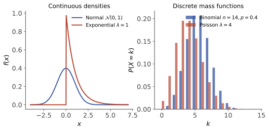

本页目录
概率 II · 随机变量与分布
随机变量把"随机结果"翻译成"数"，从此微积分全套工具进场。本页两件事：分布的描述工具（分布函数/分布列/密度），以及常见分布全家福——每个分布都记三件事：它建模什么场景、参数含义、期望方差。
学习层：同一分布，四种镜头能不能互相翻译？
1. 具体谜题：一根“概率曲线”到底能不能看见所有质量？
把同一个随机变量交给四个读数器：离散时看点质量 / PMF，所有情形都看 CDF，绝对连续部分看密度下的区间面积，再用 quantile 把概率刻度反过来映回数轴。谜题是：如果分布在 \(x=0.4\) 处突然放了 \(0.3\) 的质量，同时剩余 \(0.7\) 均匀铺在 \([0,1]\) 上，那么“密度在 \(0.4\) 附近是多少”和“\(P(X=0.4)\) 是多少”为什么不是同一个问题？
再把 \(X\sim U(-1,1)\) 变成 \(Y=X^2\)。这个函数先下降后上升；当 \(y>0\) 时，\(x=+\sqrt y\) 与 \(x=-\sqrt y\) 两条路径都会到达同一个 \(y\)。只套一条单调 Jacobian 会漏掉一半质量。
2. 先预测：四个读数器先各写一句话
在打开实验前，先回答：
- 离散三点分布在 \(x=1\) 处的 CDF 是平滑经过，还是跳跃？跳跃高度应当和哪个量相等？
- 混合模型在 \(x=0.4\) 的点概率、连续部分密度和区间概率，分别应该由哪一本账记录？能否用一个普通 PDF 把三者一次性包办？
- 若 \(p\) 落在原子造成的 CDF 跳跃高度内部，\(Q(p)=\inf\{x:F(x)\ge p\}\) 会线性插值，还是停在原子位置？
- 对 \(Y=X^2\) 和 \(y=0.25\)，原像有几个？两个原像的密度贡献应该相加还是相减？
3. 最小模型：四种表示只是同一测度的不同投影
先固定四个完全解析的预设：
离散模型。 \(P(X=0)=0.2,\ P(X=1)=0.5,\ P(X=2)=0.3\)。点质量是 PMF 的条目，CDF 在 \(0,1,2\) 处跳跃。
绝对连续模型。 \(X\sim U(0,1)\)，\(f_X(x)=1\)（\(0<x<1\)），所以 \(F(x)=x\)（在 \([0,1]\) 内），\(P(a<X\le b)=\int_a^b f_X(x)\,dx=b-a\)。
混合模型。
它在 \(0.4\) 有原子质量 \(0.3\)，连续部分的密度是 \(0.7\)（在 \([0,1]\) 上），但整个分布没有一个普通的 Lebesgue PDF 可以把原子也表示成面积。比如
非单调变换。 \(X\sim U(-1,1),\ Y=X^2\)。对 \(0<y<1\)，
两项分别来自 \(+\sqrt y\) 与 \(-\sqrt y\)，不能把 \(g(x)=x^2\) 当成全域单调函数来套一条逆函数公式。
四种表示的翻译规则可以压缩成：
- 点质量 / PMF：\(p(x)=P(X=x)\)，离散时对所有支持点求和；连续点的 \(p(x)\) 可以处处为 \(0\)。
- CDF：\(F(x)=P(X\le x)\)，总是右连续；原子表现为跳跃，连续部分表现为斜率。
- 密度 / 区间面积：若全分布绝对连续，\(P(a<X\le b)=\int_a^b f\)。混合分布只能把连续部分面积和原子质量分开相加。
- Quantile / generalized inverse：\(Q(p)=\inf\{x:F(x)\ge p\}\)。CDF 有跳跃时，跳跃对应的整段 \(p\) 都映回同一个原子位置。
4. 可操作实验：先过预测门，再切换同一份账本
下方实验固定预设和解析公式，不调用随机数。揭示后可以切换四个模型、改变区间 \((a,b]\) 和 quantile grid 点数 \(N\)。四格图共用同一个模型：PMF / 点质量、CDF、密度与区间面积、quantile / generalized inverse。图内标注使用英文，方便把 \(F\)、density、area、\(Q\) 这些符号和正文公式对齐。
无 JavaScript 时的完整静态读法：四个预设都用解析式读取，绝不把 quantile grid 冒充 IID 随机样本。令 \(p_i=(i+\tfrac12)/N\)，网格点为 \(Q(p_i)\)，每个点权重 \(1/N\)；它是中点积分 / 可视化规则，因此相同预设和 \(N\) 每次都给出相同结果。
| 预设 | 点质量 / PMF | CDF 与区间 | 密度读法 | Quantile |
|---|---|---|---|---|
| \(0,1,2\) 三点离散 | \(0.2,0.5,0.3\) | 在 \(0,1,2\) 跳跃；\(P(0.5<X\le1.5)=0.5\) | 没有普通密度，用点质量求和 | \(Q(0.2)=0,\ Q(0.21)=1\) |
| \(U(0,1)\) | 每个点 \(P(X=x)=0\) | \(F(x)=x\)；\(P(0.2<X\le0.7)=0.5\) | \(f=1\)，区间面积就是 \(0.5\) | \(Q(p)=p\) |
| \(0.3\delta_{0.4}+0.7U(0,1)\) | \(P(X=0.4)=0.3\) | \(F(0.4^-)=0.28,\ F(0.4)=0.58\)；\(P(0.2<X\le0.5)=0.21+0.3=0.51\) | 连续部分密度为 \(0.7\)，但原子不是这条密度的面积；没有完整普通 PDF | \(0.28\le p\le0.58\) 时 \(Q(p)=0.4\) |
| \(Y=X^2,\ X\sim U(-1,1)\) | 每个 \(y\) 的点概率为 \(0\) | \(F_Y(y)=\sqrt y\)；\(P(0.25<Y\le0.64)=0.8-0.5=0.3\) | \(f_Y(y)=1/(2\sqrt y)\)，来自两个原像贡献相加 | \(Q(p)=p^2\) |
“点概率为 \(0\)”不等于“不可能”：例如 \(U(0,1)\) 中 \(P(X=0.5)=0\)，但 \(P(0.49<X\le0.51)=0.02>0\)；对 \(Y=X^2\)，\(P(Y=0.25)=0\) 也不妨碍邻近区间有正概率。混合模型则正好提供反例：\(P(X=0.4)=0.3>0\)，所以不能把所有分布都硬说成“处处有 PDF”。
5. 误区与边界：每一种图都要带着条件读
- CDF 不是 PMF 的另一种画法而已。 PMF 只把质量放在离散点；CDF 累积所有不超过 \(x\) 的质量。连续分布也有 CDF，即使每个点的概率都是 \(0\)。
- 密度值不是点概率。 \(f(0.5)=1\) 不是 \(P(X=0.5)=1\)；点概率要看原子，区间概率要积面积。密度在单点的取值甚至可以修改而不改变分布。
- 混合分布没有“处处 PDF”这句捷径。 连续部分可以有密度，但原子是相对于 Lebesgue 测度的奇异质量，必须单独记账。
- 非单调变换不能只保留一个根。 \(Y=X^2\) 在 \(y>0\) 有两个原像；分布函数法先求 \(P(g(X)\le y)\) 最稳妥，公式法也必须对所有可行原像求和。
- 广义逆不是普通函数的逐点反解。 CDF 跳跃时，\(Q(p)=\inf\{x:F(x)\ge p\}\) 会把一段概率刻度压到原子；连续严格增只是更简单的特例。
- quantile grid 不是随机实验。 网格点是人为固定的 \(p_i\)，没有 IID、没有随机 seed 方差，也不能用一张网格图声称“抽样结果”。它适合确定性积分与比较表示。
6. 迁移问题：换模型后，哪一条翻译规则还成立？
- 把混合模型的原子从 \(0.4\) 移到 \(0.8\)，保持原子权重 \(0.3\)。写出 \(F(0.8^-)\)、\(F(0.8)\)，并判断 \(Q(p)\) 在哪一段 \(p\) 上恒等于 \(0.8\)。
- 若 \(X\sim U(-2,2)\) 且 \(Y=X^2\)，先用事件法写出 \(F_Y(y)\)，再解释为什么 \(f_Y(y)\) 仍要把正负两个根相加；支持集和 \(y=0\) 附近的密度会怎样变化？
- 对任意给定 CDF，如何用 \(Q(p_i)\) 和等权中点规则近似 \(E[h(X)]\)？写出近似式，并说明它何时只是确定性积分近似，不能当作 Monte Carlo 误差条。
- 给出一个点概率为 \(0\) 但区间概率为正的例子，再给出一个含原子的混合分布例子；分别指出应查看 CDF 的斜率还是跳跃。
1. 随机变量与分布函数
定义 随机变量 \(X: \Omega \to \mathbb{R}\)（可测函数——每个事件 \(\{X \leq x\}\) 都在事件域内）。
分布函数 \(F(x) = P(X \leq x)\)。特征性质（是分布函数 \(\iff\) 三条全满足）：单调不减；右连续；\(F(-\infty) = 0, F(+\infty) = 1\)。区间概率 \(P(a < X \leq b) = F(b) - F(a)\)；单点概率 \(P(X = a) = F(a) - F(a^-)\)（跳跃高度，连续分布处处为零——连续型单点概率为 0 但不代表不可能）。
2. 离散型：分布列与四大分布

\(P(X = x_k) = p_k\)，\(\sum p_k = 1\)。
| 分布 | 分布列 | 场景 | \(E\) | \(D\) |
|---|---|---|---|---|
| 0–1 分布 \(B(1,p)\) | \(P(X{=}1){=}p\) | 单次成败 | \(p\) | \(p(1-p)\) |
| 二项 \(B(n,p)\) | \(\binom{n}{k}p^k q^{n-k}\) | \(n\) 重独立试验成功数 | \(np\) | \(npq\) |
| 泊松 \(P(\lambda)\) | \(\dfrac{\lambda^k}{k!}e^{-\lambda}\) | 单位时间稀有事件数 | \(\lambda\) | \(\lambda\) |
| 几何 \(G(p)\) | \(q^{k-1}p\) | 首次成功所需次数 | \(\frac1p\) | \(\frac{q}{p^2}\) |
| 超几何 | \(\frac{\binom{M}{k}\binom{N-M}{n-k}}{\binom{N}{n}}\) | 不放回抽样 | \(n\frac{M}{N}\) | — |
泊松定理（二项的极限）：\(n \to \infty,\ np \to \lambda\) 时 \(B(n, p) \to P(\lambda)\)——"大量机会 × 微小概率 = 泊松"，\(n \geq 100, np \leq 10\) 时近似可用。几何分布的无记忆性：\(P(X > m + n \mid X > m) = P(X > n)\)（离散唯一；"已经失败 m 次"不改变未来——赌徒谬误的数学反驳）。
3. 连续型：密度与四大分布
\(F(x) = \int_{-\infty}^x f(t)\,dt\)；\(f \geq 0\)，\(\int f = 1\)；\(F' = f\)（连续点处）。
| 分布 | 密度 | 场景 | \(E\) | \(D\) |
|---|---|---|---|---|
| 均匀 \(U(a,b)\) | \(\frac{1}{b-a}\) 于 \((a,b)\) | 等可能区间 | \(\frac{a+b}{2}\) | \(\frac{(b-a)^2}{12}\) |
| 指数 \(\mathrm{Exp}(\lambda)\) | \(\lambda e^{-\lambda x}\ (x>0)\) | 等待时间/寿命 | \(\frac1\lambda\) | \(\frac{1}{\lambda^2}\) |
| 正态 \(N(\mu, \sigma^2)\) | \(\frac{1}{\sqrt{2\pi}\sigma}e^{-\frac{(x-\mu)^2}{2\sigma^2}}\) | 大量因素叠加 | \(\mu\) | \(\sigma^2\) |
| Gamma / Beta | （形状族） | 等待 \(k\) 次事件 / \([0,1]\) 上的比例 | — | — |
指数分布的无记忆性（连续唯一）：\(P(X > s + t \mid X > s) = P(X > t)\)——"用过的和新的一样"，可靠性理论与排队论的基石（🔗 随机过程页 Poisson 过程的间隔）。
正态分布专栏（最重要的分布，单列）：
- 密度归一化依赖 \(\int e^{-x^2}dx = \sqrt\pi\)（数分 VI 的高斯积分在此上岗）；
- 标准化：\(X \sim N(\mu, \sigma^2) \Rightarrow \dfrac{X - \mu}{\sigma} \sim N(0, 1)\)，一切正态概率查标准正态表 \(\Phi\)：\(P(a < X \leq b) = \Phi(\frac{b-\mu}{\sigma}) - \Phi(\frac{a-\mu}{\sigma})\)；
- 3σ 法则：落在 \(\mu \pm \sigma, 2\sigma, 3\sigma\) 内的概率约 \(68.3\%,\ 95.4\%,\ 99.7\%\)；
- 线性变换保正态：\(aX + b \sim N(a\mu + b, a^2\sigma^2)\)；
- 为什么无处不在——中心极限定理（概率 V）给出解释；🔗 高斯噪声贯穿扩散模型全线（comfy 课 02 讲的每一个 \(\epsilon\)）。
4. 随机变量函数的分布
\(Y = g(X)\) 的分布：
- 离散：把 \(X\) 的取值代进 \(g\)，同值合并概率；
- 连续通用法（分布函数法）：\(F_Y(y) = P(g(X) \leq y)\) 化成关于 \(X\) 的区间概率，再求导。万能，优先掌握；
- 公式法（\(g\) 严格单调可导）：
（导数因子 = 一维 Jacobi——变量替换的"密度守恒"：\(|f_Y\,dy| = |f_X\,dx|\)。🔗 归一化流生成模型的核心公式就是它的多维版，行列式换成 Jacobi 行列式，数分 VI/V 呼应。）
必会两例：\(X \sim N(0,1) \Rightarrow Y = X^2 \sim \chi^2(1)\)（分布函数法，密度 \(\frac{1}{\sqrt{2\pi y}}e^{-y/2}\)——统计页三大分布的起点）；\(F\) 连续严格增时 \(F(X) \sim U(0,1)\)（概率积分变换——一切随机数生成的原理：均匀数过 \(F^{-1}\) 得任意分布）。
5. 典型例题
例 1（正态概率） 某测量 \(X \sim N(10, 4)\)，求 \(P(8 < X \leq 14)\)。 解：标准化 \(P(-1 < Z \leq 2) = \Phi(2) - \Phi(-1) = 0.9772 - (1 - 0.8413) = 0.8185\)。
例 2（泊松近似） 某书 500 页共 100 个错字，求某页至少 2 个错字的概率。 解：每页错字数近似 \(P(\lambda),\ \lambda = 0.2\)：\(P(X \geq 2) = 1 - e^{-0.2}(1 + 0.2) \approx 0.0175\)。
例 3（函数分布，分布函数法全流程） \(X \sim U(0, 1)\)，求 \(Y = -\frac{1}{\lambda}\ln X\) 的分布。 解：\(y > 0\) 时 \(F_Y(y) = P(-\frac1\lambda \ln X \leq y) = P(X \geq e^{-\lambda y}) = 1 - e^{-\lambda y}\)——指数分布。这正是"均匀数变指数数"的生成器公式（概率积分变换的实战版，Monte Carlo 模拟必备）。\(\blacksquare\)
下一页：多个随机变量同台——联合分布、独立性、卷积与二维正态。